Allen-Bradley programmable logic controllers (PLCs) require two separate application programs running in a personal computer (PC) to create, edit, and download ladder-diagram programs to the PLC. The first application is called RSLinx, which manages all digital communications between the PC and the PLC. The second application is called RSLogix, which is a program editor for the PLC. This tutorial steps you through the use of RSLogix as though you had just configured RSLinx and were using RSLogix for the very first time.
There are several different variations of RSLogix for PLC programming. The one shown in this tutorial is RSLogix Micro Starter Lite, which is a free download from Rockwell Automation, designed to work with MicroLogix 1000 and 1100 PLCs.
Now you are ready to begin using RSLogix to edit and download ladder-diagram programs to your PLC. Begin by starting up RSLogix Micro Starter Lite from your program start menu. You should soon see this blank window appear:
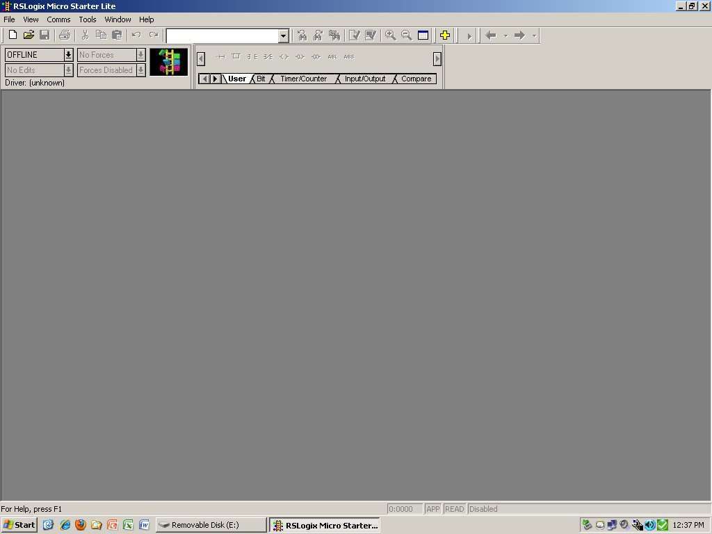
Note how there is no known driver yet, which means RSLogix is not yet ready to communicate with your PLC.
One way (but not the only way) to configure RSLogix for communication with your PLC is to go to the ``Tools'' menu and select the ``Options...'' link:
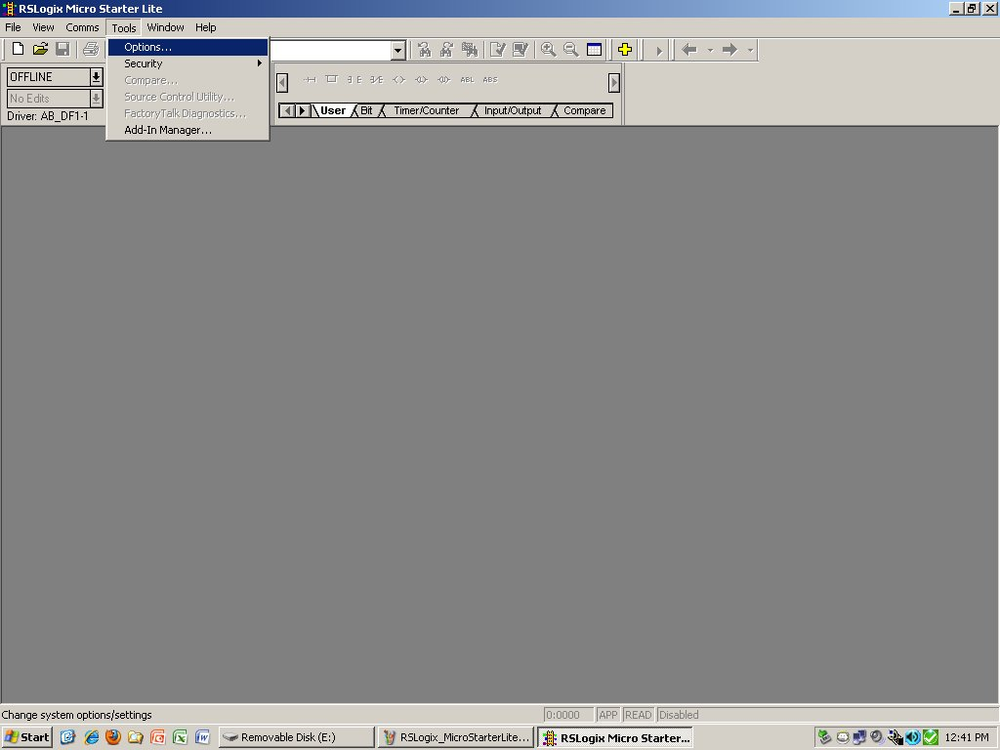
A new ``System Options'' window will open up. Select the ``System Communications'' tab to view the page where you may select the RSLinx driver instance that RSLogix will use for all communications with the PLC. Here, the appropriate driver is the one we created in RSLinx called ``AB_DF1-1'':
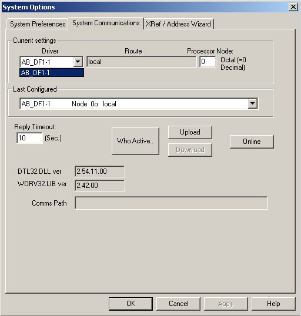
At this point, RSLogix is ready to communicate with your PLC. If you wish to immediately ``go online'' with your PLC to view the program already in it, you may do so by clicking on the down arrow next to where it says ``OFFLINE'' on the RSLogix window, then selecting ``Go Online'':
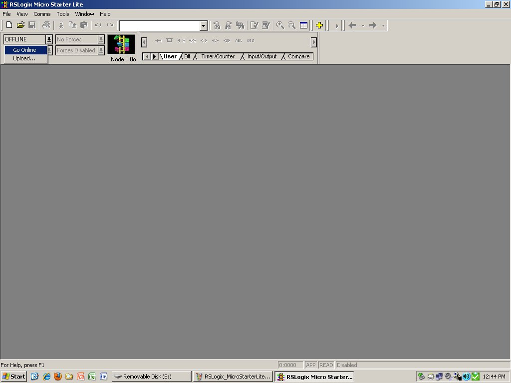
However, if your PLC has no program in it yet, or you do not wish to start by editing the existing program, there is no point in going online with your PLC yet.
An alternative way to begin programming is to start a brand-new project for a PLC model of your choice. Go to the ``File'' menu and select ``New'' to begin. There, you will be prompted by RSLogix to select one of several PLC processor types. Since RSLogix Micro Starter Lite is a free program, it only gives you a few PLC options:
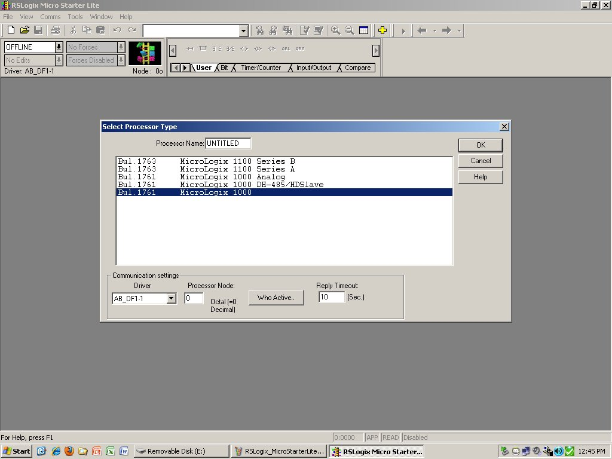
After entering a name for this new project (or choosing the default name of UNTITLED), you will see this screen showing you a tree-like structure on the left showing PLC properties and parameters, as well as a mostly-blank ladder diagram editor on the right-hand side. At first, there will only be a single rung of ladder logic displayed (numbered 0000), containing the END instruction (shown as a virtual ``coil''):
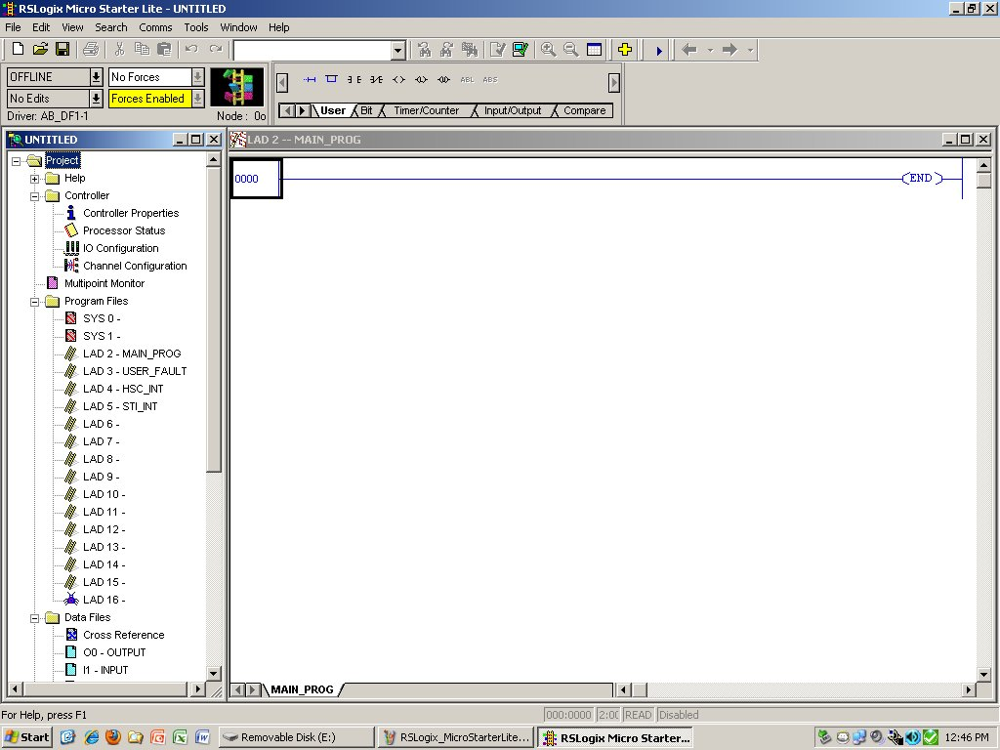
By right-clicking on any area in the blank ladder editor screen, you will open up a new window called ``View Properties''. In this window are several tabs you may click on, with pages of properties and options to specify about the editor environment. In this instance, I have selected the Bit Address Format to be displayed as a single line rather than the default option of split lines:
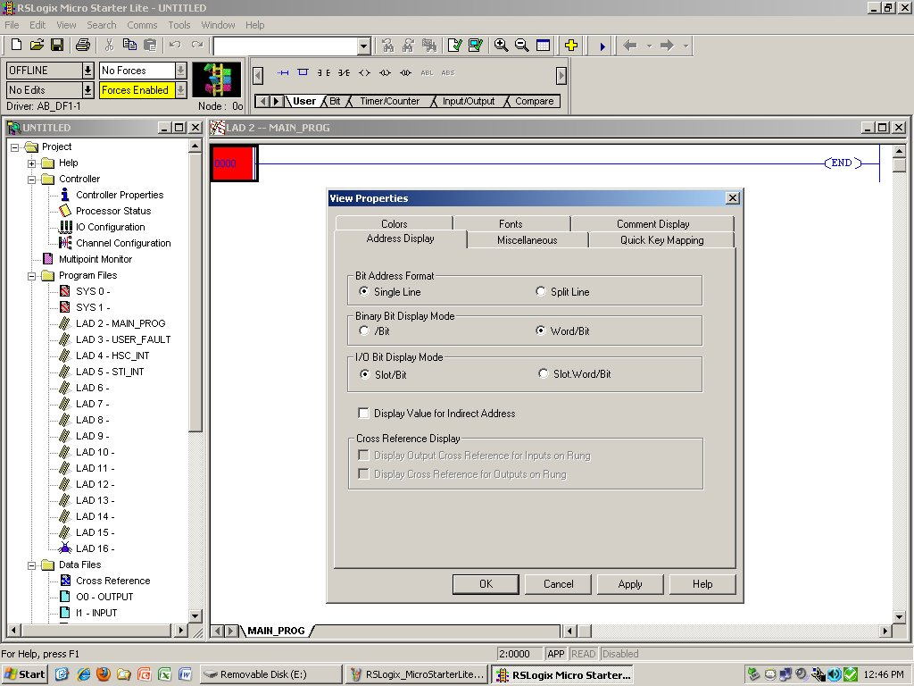
Other useful options accessible through this ``View Properties'' window include colors, sizes, fonts, and the display of program comments. As you learn more about ladder diagram programming, feel free to experiment with some of these options to customize your programming workspace!
Right-clicking on the red box surrounding the run number opens up a dialog window, where you may select the option of adding a new rung to the program. The new rung will be inserted before (above) the selected rung:
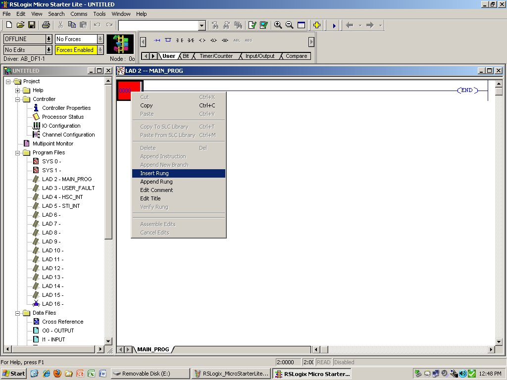
To begin creating a very simple program (consisting of one contact instruction connected to one coil instruction), click and ``drag'' a contact symbol from the tool pallet (shown above, with the ``User'' tab selected) onto the new rung. A red-colored box on the rung will turn green when the dragged symbol nears an appropriate placement point:
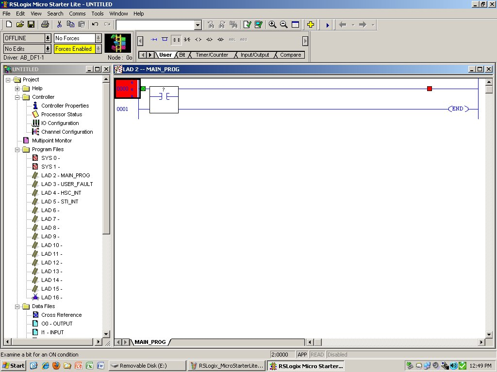
Do the same with a coil instruction, dragged from the tool pallet onto the placement point near the right-hand end of the new rung:
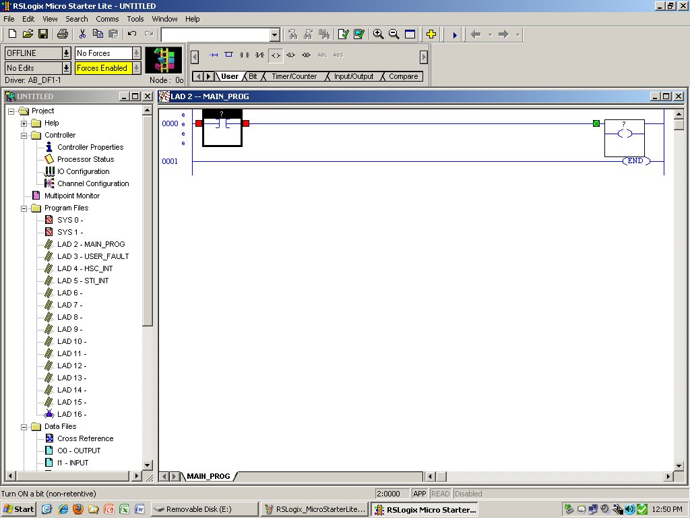
We wish the contact instruction to be associated with a real-world input bit, so we must assign an address to that instruction beginning with the letter I. An easy way to do this is to double-click on the ``I1 -- INPUT'' file listing under ``Data Files'' in the left-hand pane to bring up a window showing all the available input bits in the PLC's memory. Clicking and dragging any of these bits to the contact instruction will assign that address to the contact:
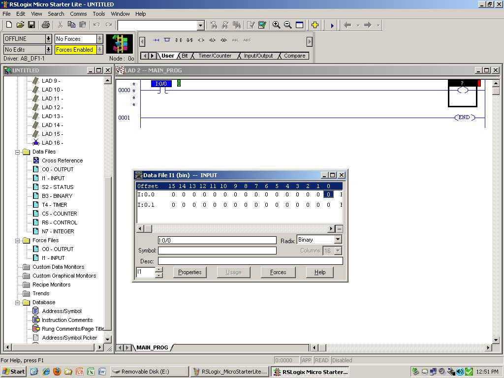
In this example, I have chosen the input bit I:0/0 to assign to the contact instruction. As before, a red-colored place-holder will turn green when the dragged address nears an appropriate destination.
We may do the same with the coil instruction, dragging a bit address from the output file window to a location near the coil where the placeholder symbol turns from red to green:
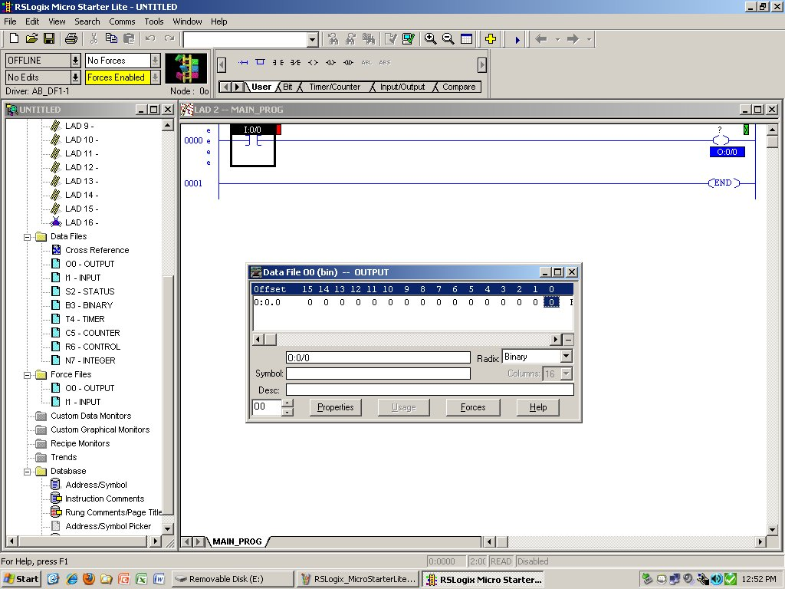
In this case, I have chosen the output bit address O:0/0 to be assigned to the coil instruction. This completes my very simple example program, where a single input bit turns on a single output bit in direct fashion.
Now that both instructions (contact and coil) have been assigned addresses, we may verify that the program is complete and its syntax is okay. Click on the ``Verify Project'' icon (the one with the green check-mark overlaid on a PC symbol) to do this.
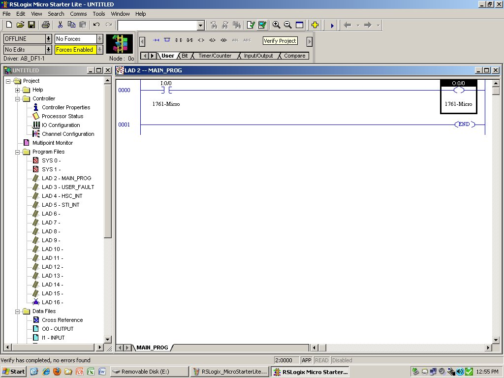
After verifying the project, you should see a message toward the bottom of the window saying no errors have been found.
Now that the ladder diagram program has been verified, it is safe to perform a download to the PLC. You may do this by clicking on the down arrow next to where it says ``OFFLINE'' on the RSLogix window, then selecting ``Download'':
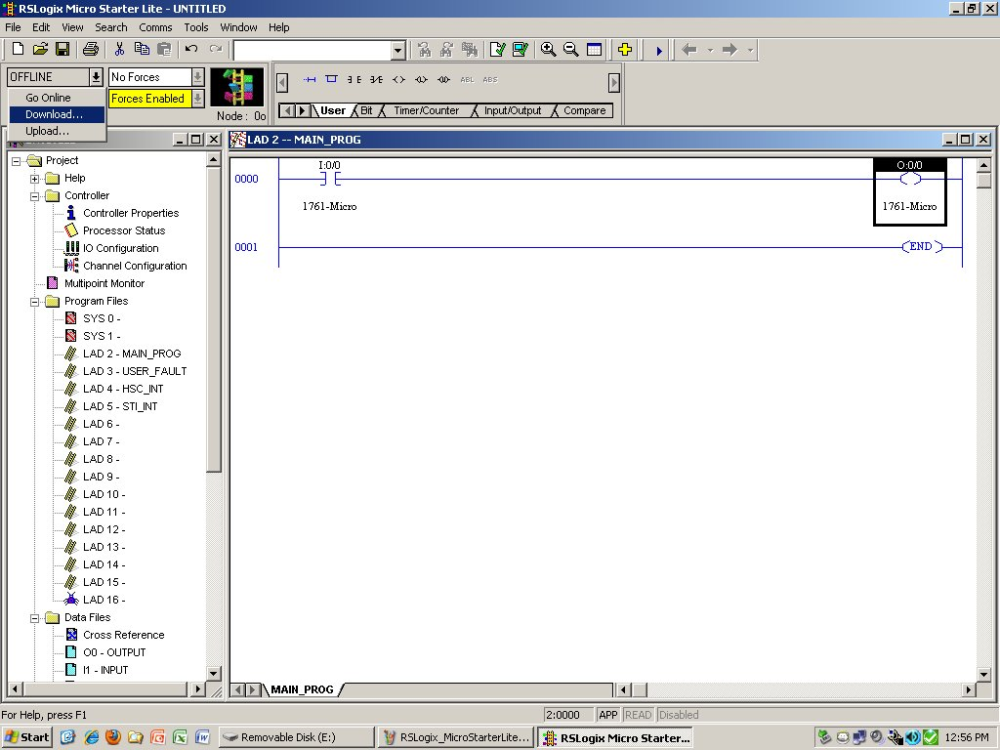
After downloading, RSLogix will prompt you whether or not to switch the PLC to run mode, and to remain online to see the status of the instructions.
One of the limitations of RSLogix Micro Starter Lite is that is does not allow online editing of the program structure. This is actually a good thing in most cases, because it may be dangerous modifying a ladder diagram program as it is running in a PLC controlling a real process! When you wish to edit your ladder program, you must first ``Go Offline'', then perform your modifications, then download again to send those changes to the PLC.